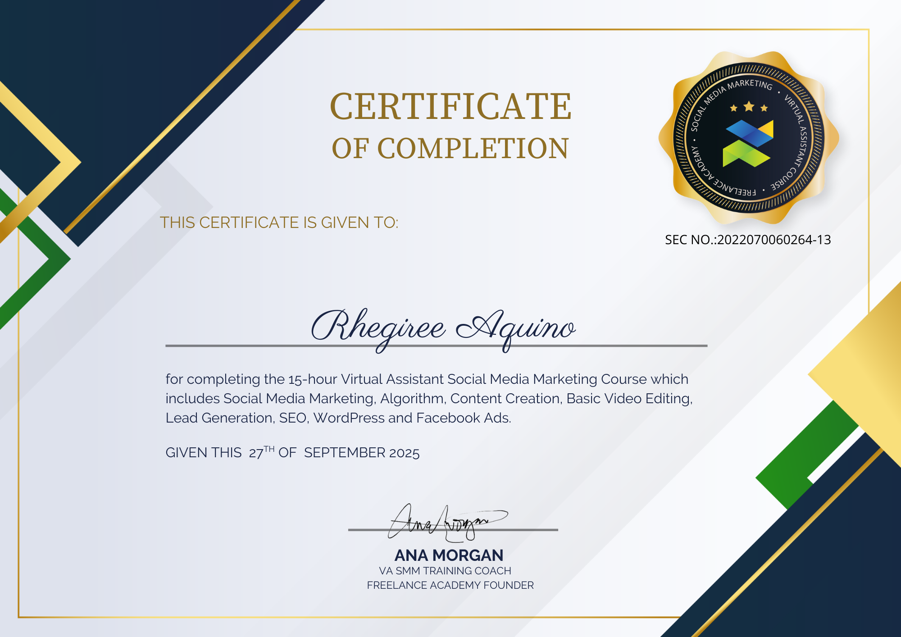
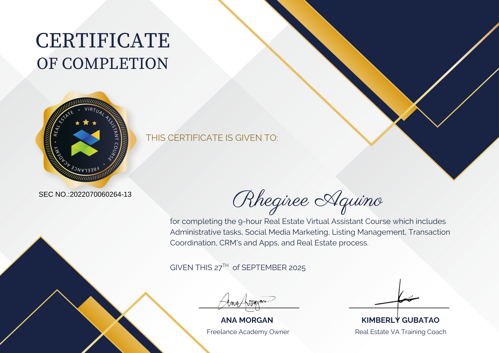

Administrative Support
CRM updates, data entry, file organization, quotations, reports, and back-office documentation.
Hello, I’m
I help teams stay organized, support their customers, and keep day-to-day work moving—with clear communication and dependable follow-through.
MEET YOUR SUPPORT PARTNER
I’m a customer support and operations professional with experience in technical support, executive assistance, account management, and team leadership.
From handling customer concerns to coordinating suppliers and reviewing internal workflows, I bring attention to detail and ownership to the work.
Get to know meWHAT I CAN HELP WITH
CRM updates, data entry, file organization, quotations, reports, and back-office documentation.
Professional phone, email, and chat support; customer issue resolution, product troubleshooting, and follow-ups.
Client communication, supplier coordination, account follow-ups, order processing, and pricing checks.
Attendance review, payroll preparation, schedules, SOPs, performance monitoring, and team coordination.
TOOLS & PLATFORMS
WORKS & EXPERIENCE
My background spans Amazon customer service, Comcast and WYBOT technical support, Arrivia team leadership, Avetta supplier success, Bartercard AU account management, and CloudClerks operations.
Explore my involvement in HRIS and employee portal workflows, alongside my career experience.
See My Works & ExperienceTRAINING BACKGROUND
Completed courses and supporting certificates, with space for additional training documents.

Freelance Academy · 15 hours
Completed September 27, 2025
Social media marketing, content creation, basic video editing, lead generation, SEO, WordPress, and Facebook Ads.

Freelance Academy · 9 hours
Completed September 27, 2025
Administrative tasks, listing management, transaction coordination, CRM tools, social media marketing, and real estate processes.
Truck Dispatching
Truck dispatching training
Certificate not yet availableGoHighLevel
GoHighLevel training
Certificate not yet availableHOW I APPROACH THE WORK
Clarify the task, priorities, expected output, and deadline.
Structure the information, workflow, and next steps.
Complete the work with careful checks and clear documentation.
Share progress, flag concerns, and follow through.
WORK WITH ME
Looking for support in customer service, administration, account support, or operations? I’d be glad to discuss your team’s needs.
Email MeDownload My Resume